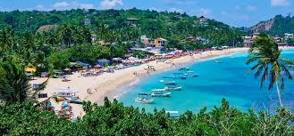
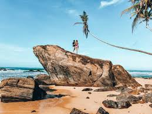
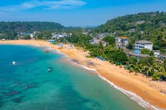

Unawatuna Beach
 
Unawatuna is a coastal town in Galle district of Sri Lanka.
Unawatuna is a major tourist attraction in Sri Lanka and known for its beach and corals.
It is a suburb of Galle, about five kilometres (three miles) southeast of the city center and approximately 108 kilometres (67 mi) south of Colombo.
Unawatuna is situated at an elevation of 5 metres (16 ft) above sea level.
Despite significant development in the last decade it is still home to the endangered and endemic purple-faced langur,
an unusually shy monkey species that can only be found in Sri Lanka's forests.
The description of the beach paradises in Valmiki's epic Ramayana sounds like Unawatuna.
"a seashore dotted with thousands of trees, coconuts, and palms dominating, strings of houses and hermitages along the coastline,
human beings and superior beings such as Gandharvas, Siddhas, and ascetics, living in them and countless bejewelled celestial nymphs thronging the shore,
the coast intermittently visited by heavenly beings, Gods and demons.":
Unawatuna traces its roots to the great epic Ramayana.
In the epic, the monkey-warrior Hanuman was sent back to India to fetch the four medicinal herbs by Jambavan namely,
mritasanjeevani, vishalyakarani, suvarnakarani, and sandhani from the Himalayas in order to heal Lakshman who was wounded trying to save the abducted Princess Sita from the demon king Ravana.
Hanuman failed to identify these herbs, so he lifted the entire mountain and carried it to the battlefield to try to save Lakshman, but in the process,
a chunk of it "fell-down" in the location of the present day Unawatuna, the name of the village derives from "Una-watuna" meaning "fell down".
Currently, an edifice is being built in honour of Hanuman on the harbour end of Rumassala Hill by Japanese monks of the Mahayana sect of Buddhism near the Peace Pagoda that they built.
 Location (Unawatuna Beach)